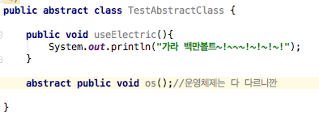
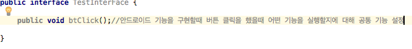

내가 이제까지 코딩을하면서 추상화에 대해 사용을 거의 하지 않았다. 따라서 interface 든 abstract별로 상관이 없었는데 지금은 디자인 패턴을 공부하면서 이 두개의 차이를 명확하게 설명할수 없고 무슨 차이인지 몰라 조사하게 되었다.
interface
인터페이스는 일종의 추상클래스이다. 인터페이스는 추상클래스처럼 추상메서드를 갖지만 추상클래스보다 추상화 정도가 높아서 추상클래스와 달리 몸통을 갖춘 일반 메서드 또는 멤버변수를 구성원으로 가질 수 없다.
추상클래스는 부분적으로 완성된 미완성 설계도라면 인터페이스는 구현된건 없고 그저 밑그림만 있는 기본설계도이다.
사전적 의미는 어떤 객체와 객체의 중간에 놓이는것 혹은 통신채널이라고도 한다. 인터페이스는 서로 다른 클래스를 만들 때 서로 어떻게
만들것인지 미리 약속할 때 쓰이는 것인데 여기서 만드는 것의 기준은 기능이다!
인터페이스는 프로그램을 설계하고 조금 더 유연한 프로그램을 만드는 기법이며, 상속과 더불어서 다형성이라는
객체지향 프로그래밍의 특징을 구현하는 방식이다.
인터페이스 출처
abstract
추상의 사전적 의미는 개별의 사물이나 표상의 공통된 속성이나 관계 따위를 뽑아냄 이다. 추상클래스는 공통된 부분은 놔두고 기능이 다른 부분만
추상화를 하는 기능이다. 예를 들어 클래스를 설계도에 비유한다면, 추상클래스는 미완성 설계도에 비유할 수 있다. 미완성 설계도란,
단어의 뜻 그대로 완성되지 못한 체로 남겨진 설계도를 말한다.
클래스가 미완성이라는 함은 멤버의 개수에 관계된 것이 아니라, 단지 미완성 메서드(추상메서드)를 포함하고 있다는 의미이다.
추상클래스 출처
내가 생각하는 interpage 와 abstract
위에 출처에서 interpage와 abstract class각각의 개념이 있길래 그것을 요약해 보았다. 이거 말고 다른 블러그에서 다른 자료들을 읽을수록 조금식 설명이 달라 어떻게 이해해야 좋을지.. 그나마 내가 제일 괜찮다고 느낀 블러그 이다 여기서 인터페이스와 추상클래스의 차이가 잘 정리가 되어있다. 내가 생각하기에 인터페이스와 추상클래스의 가장큰 차이는 기능이 공통되어 있나, 구현이 공통되어 있나 이다. 예를 들어 모든 핸드폰은 전기를 사용한다. 이부분은 굳이 추상화를 해줄 필요가 없이 하나만 구현하면 된다. 이런것들은 추상클래스로 하는게 좋다고 생각하고 인터페이스는 협업을 위해 기능을 미리 약속하고 기능을 따로따로 구현하는 느낌이였다.
추상 클래스
인터페이스